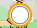
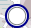

La couleur orange signifie que le blockhaus ou la casemate était en projet en 1940 et que la construction n’a pas débuté.
La couleur bleue est utilisée pour les constructions ayant été construites ou commencées.


Le point sans icône désigne un blockhaus ou une casemate.
Le carré désigne une cuve pour canon.
Le losange désigne une tourelle démontable.
Le téléphone désigne une chambre de coupure.
Le château désigne un fort.
Le drapeau désigne un poste de commandement.
La croix désigne un barrage de route.
La flamme désigne un dispositif de mines.
L’avion désigne un aérodrome.
Les réseaux antichars (rails ou fossés) sont tracés à l’aide de traits bleus.